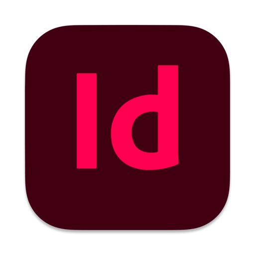
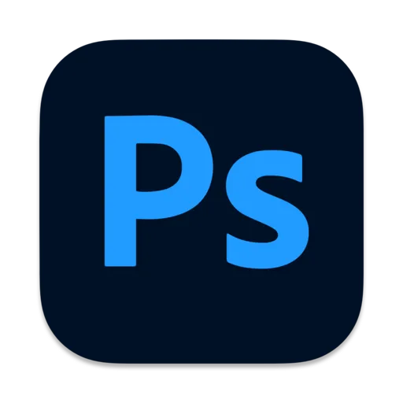

Software
Il mio software preferito è Procreate, che utilizzo per la maggior parte delle mie illustrazioni digitali grazie alla sua flessibilità e intuitività. Ho inoltre acquisito competenze in altri software di grafica:


InDesign - 70%

Photoshop - 50%

Illustrator - 80%